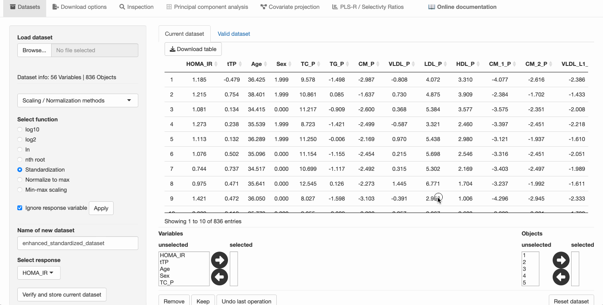

# mvpaShiny This slide deck contains looped GIFs that show how to work with mvpaShiny, using the HOMA-IR study dataset. However, not all plots shown in the manuscript are recreated. For a detailed description on how the plots and tables for the manuscript were created, please consult the <a href="https://liningtonlab.github.io/mvpaShiny_documentation/publication/R_script/" target="_blank" rel="noopener noreferrer">mvpa R workflow</a>. ## How to navigate Press the left and right arrow keys to navigate through the slide deck. Press **P** to open a presenter mode that reveils additional notes to each slide. ## Resources Either download the mvpaShiny package and work locally <a href="https://github.com/liningtonlab/mvpaShiny" target="_blank" rel="noopener noreferrer">(link)</a> or use the online version on <a href="http://www.mvpashiny.org" target="_blank" rel="noopener noreferrer">www.mvpashiny.org</a>! --- # 1. Load, standardize and save the HOMA-IR dataset --- # 2. Inspect variable statistics --- # 3. Create the HOMA-IR - lipoproteins subset ??? Press the control (Windows) or command (MacOS) key to select variables or objects one after another. Press the shift key to select several items as shown in the clip. --- # 4. Perform PLS-R to obtain target scores **t<sub>TP</sub>** ??? Setting a seed is not mandatory but enables a reproducible Monte-Carlo resampling procedure. --- # 5. Inspect PLS-R model --- # 6. Transfer **t<sub>TP</sub>** to dataset ??? The target score **t<sub>TP</sub>** is obtained from the Target Projection method on the PLS-R model, using the determined optimal number of components and using the full dataset. Short reminder: Here, we use the target score as a proxy for the explained variance in HOMA-IR of all the lipoproteins. It is effectively a dimension reduction step. --- # 7. Inspect customized correlation matrix  --- # 8. Perform covariate projection ??? Keep in mind that the order in which the covariates are selected matters and affects the resulting tables. --- # 9. Use adjusted dataset as current dataset ??? When saving a dataset, mvpaShiny performs a check to see if the dataset is fit for the downstream analyses, such as PLS-R. That is why the invariant (variance = 0) variables have to be removed, before the dataset can be saved. --- # 10. Create subset without lipoproteins --- # 11. Perform PLS-R --- # 12. Inspect selectivity ratios and fractions